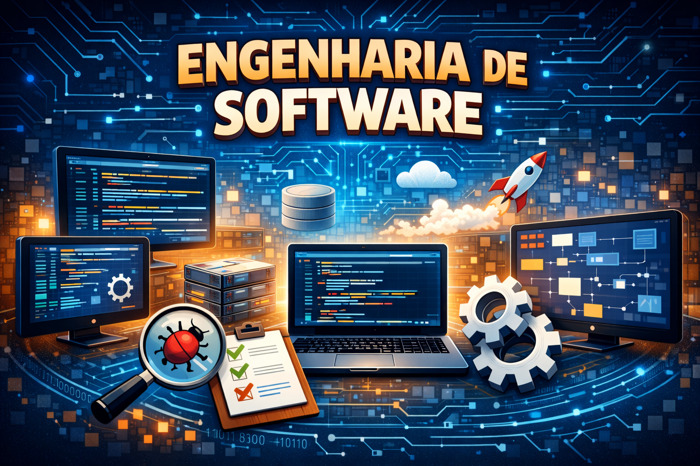
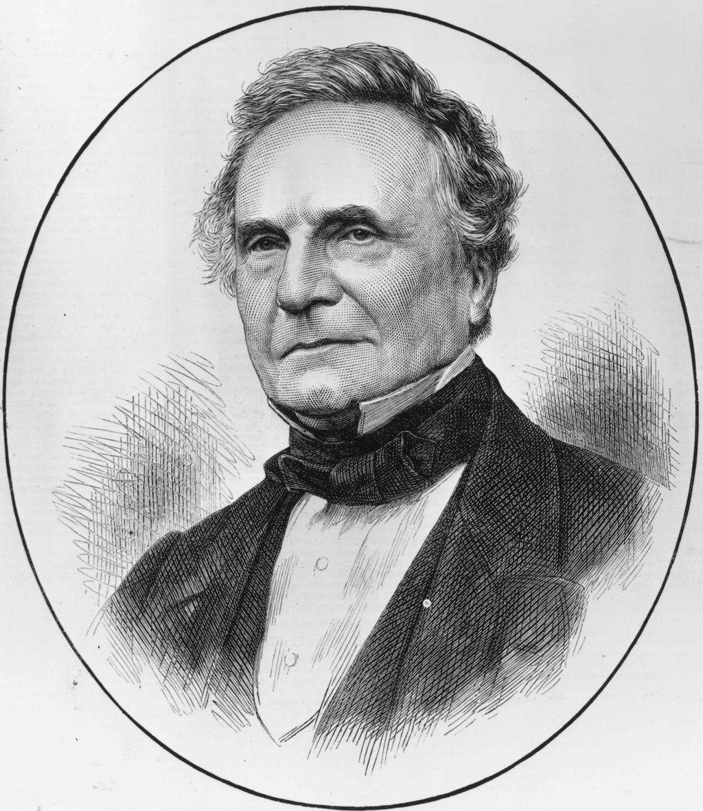
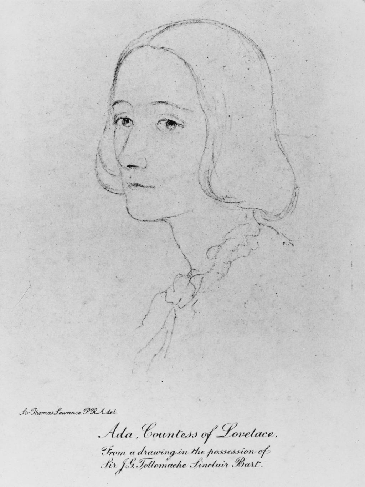

Fundamentos da Engenharia de Software

Método Scrum
O Scrum é um método ágil utilizado na engenharia de software para organizar e gerenciar o desenvolvimento de projetos. Ele faz parte das metodologias ágeis e tem como principal objetivo tornar o processo de criação de software mais flexível, colaborativo e eficiente, permitindo que equipes entreguem partes funcionais do sistema em ciclos curtos de desenvolvimento.
Diferente dos modelos tradicionais, em que todo o software é planejado e desenvolvido de uma só vez, o Scrum divide o trabalho em pequenos ciclos chamados de Sprints. Cada Sprint normalmente dura entre 1 e 4 semanas e resulta em uma nova versão ou melhoria do sistema que pode ser testada ou utilizada.
No Scrum, o trabalho é organizado em uma lista chamada Product Backlog, que contém todas as funcionalidades, melhorias e correções que devem ser desenvolvidas no projeto. Durante o planejamento da Sprint, a equipe seleciona alguns desses itens para trabalhar naquele ciclo específico, formando o Sprint Backlog.
O método também define três papéis principais dentro da equipe:
➜Product Owner (PO): responsável por definir e priorizar as funcionalidades do sistema, garantindo que o produto atenda às necessidades do cliente ou usuário.
➜Scrum Master: atua como facilitador do processo, ajudando a equipe a seguir a metodologia Scrum, removendo obstáculos e melhorando a comunicação.
➜Time de Desenvolvimento: grupo de profissionais responsáveis por projetar, programar, testar e entregar o software.
Além disso, o Scrum possui eventos importantes que ajudam a organizar o trabalho e manter a equipe alinhada. Um deles é a Daily Scrum, uma reunião diária e rápida (geralmentede 15 minutos) onde cada membro da equipe explica o que fez no dia anterior, o que fará no dia atual e se existe algum impedimento no trabalho.
Ao final de cada Sprint ocorrem duas reuniões importantes: a Sprint Review, onde o trabalho realizado é apresentado e avaliado, e a Sprint Retrospective, onde a equipe discute o que pode ser melhorado no processo de desenvolvimento.
Dessa forma, o Scrum permite que projetos de software sejam desenvolvidos de maneira iterativa e incremental, facilitando adaptações a mudanças, aumentando a produtividade da equipe e melhorando a qualidade do produto final.
Figuras históricas da computação
Charles Babbage



Foi um matemático e inventor inglês do século XIX, conhecido como o pai do computador. Ele projetou máquinas mecânicas capazes de realizar cálculos automaticamente, como a Máquina Diferencial e a Máquina Analítica. A Máquina Analítica foi especialmente importante porque tinha conceitos semelhantes aos computadores atuais, como memória, processamento e possibilidade de programação. Embora suas máquinas não tenham sido totalmente construídas na época, suas ideias serviram de base para o desenvolvimento dos computadores modernos.
Principais contribuições:
➜Projetou a Máquina Analítica, que é considerada o primeiro conceito de computador programável da história.
➜Criou também a Máquina Diferencial, pensada para realizar cálculos matemáticos automaticamente.
➜Embora suas máquinas não tenham sido totalmente construídas na época, suas ideias serviram de base para os computadores modernos.
Ada Lovelace



Ada Lovelace foi uma matemática inglesa que trabalhou com os projetos de Charles Babbage. Ela estudou a Máquina Analítica e escreveu um conjunto de instruções para que a máquina realizasse cálculos, o que hoje chamamos de algoritmo ou programa. Por isso, ela é considerada a primeira programadora da história. Ada também teve a visão de que as máquinas poderiam fazer mais do que cálculos matemáticos, podendo no futuro trabalhar com música, imagens e outras informações.
Principais invenções:
➜Primeiro algoritmo para computador, instruções criadas para a Máquina Analítica.
➜Notas sobre a Máquina Analítica, explicações detalhadas de como a máquina poderia funcionar.
➜Ideia de que computadores poderiam processar mais que números, como música, textos e imagens.
Alan Turing
Alan Turing foi um matemático britânico que teve grande importância para a ciência da computação. Ele criou o conceito da Turing Machine, um modelo teórico que explica como um computador pode processar informações e resolver problemas. Durante a World War II, Turing também ajudou a decifrar códigos secretos da máquina Enigma Machine, usada pela Alemanha. Seu trabalho ajudou no desenvolvimento dos computadores modernos e da inteligência artificial.
Principais invenções:
➜Turing Machine, modelo teórico que explica como computadores funcionam.
➜Turing Test, método para avaliar se uma máquina pode demonstrar inteligência.
➜
]
Quebra dos códigos da Enigma Machine durante a World War II, ajudou a decifrar mensagens secretas alemãs.